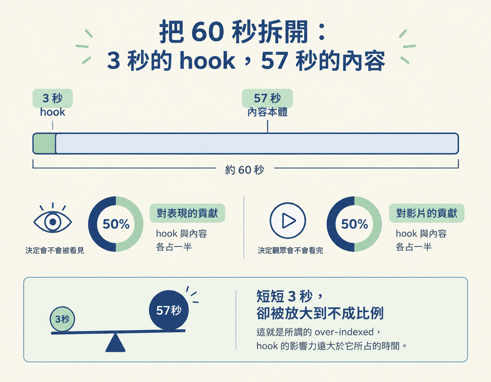

了解 hook 為什麼是影片最重要的部分，以及它唯一的任務：讓對的人知道，為什麼現在就該在意。
想像一下：你花了一整個週末寫腳本、錄影、剪輯，終於按下發布。三天後打開後台，觀看數還停在三位數，而且大多數人看不到五秒就滑走了。你重看影片，內容明明不差，問題卻出在別的地方。
這一節要談的，就是那個「別的地方」：hook，中文常翻成「鉤子」，指影片一開頭，讓觀眾決定留下或滑走的部分。課程毫不保留地稱它為「無庸置疑最重要的部分」，腳本裡沒有其他東西比它更關鍵。
這是五個步驟中的第一步：先看懂 hook 為什麼重要、它要完成什麼任務，接下來學九種句型與視覺技巧時，才知道每一招要解決什麼問題。
課程把 hook 的任務說得很簡單：讓對的人知道「為什麼現在應該在意」。這句話裡有三個關鍵：「對的人」、「現在」和「在意」。
為什麼是「對的人」？因為 hook 的目的不是抓住所有人，是讓真正屬於你的那群觀眾停下來。假設影片在談系統工程，你不需要讓每個路過的人都看完，你要讓對系統工程有興趣的人一眼認出：「這支影片是為我準備的。」
為什麼是「現在」？觀眾滑過動態牆時，不會先給你三十秒的試用期。前幾秒沒有給出留下來的理由，他就會繼續往下滑；你的內容再好，也沒有機會被看見。
課程用一句話說明觀眾真正付出的東西：每看一支內容，觀眾付給你的其實是注意力。原文是這樣說的：
Because remember with every piece of content attention is really the one that people are paying you.
這個比喻的重點是，觀眾付出的不是錢，而是時間與注意力。你的第一份工作，就是在影片最前面的幾秒，讓他知道這份注意力花得值得。
講師請你想像一支一分鐘的影片，並把它分成兩部分：前 3 秒是 hook，後面 57 秒是內容本體（body），也就是你真正要教、要講的東西。
那麼，影片的表現由什麼決定？講師估計，大約一半來自這 57 秒的內容，另一半來自包裝（packaging），而 hook 正是包裝的一部分。
| 影片的兩個部分 | 對應長度（約 60 秒影片） | 對表現的貢獻 |
|---|---|---|
| 包裝（含 hook、標題、縮圖） | 前 3 秒 | 大約一半 |
| 內容本體 | 後面 57 秒 | 大約一半 |
這裡很容易讓人困惑：3 秒和 57 秒差了將近二十倍，對表現的貢獻卻各占一半。換句話說，hook 對影片能不能送到對的人眼前，有著遠大於它所占時間的影響。課程用 over-indexed 形容這種情況，意思是 hook 的影響力被不成比例地放大。

講師特別提醒，他看過許多內容本身很好的影片，最後卻沒有被看見。問題往往出在包裝：前 3 秒、標題或縮圖不夠有力，沒能引起觀眾足夠的興趣。觀眾沒有留下來，故事自然也無從開始。
這就是為什麼 hook 值得花心思。內容是肉，但沒有包裝，再好的肉也送不到對的人面前。先把門打開，內容才有機會被看見。
想知道 hook 長什麼樣，最快的方法就是觀察自己。下次滑手機時，留意是哪個瞬間讓你停下來：一句話、一個畫面，還是一個問題。那個讓你停住的地方，就是那支影片的 hook。課程的原話是：
the key principle is just understand and observe which particular part is the one that grabs your attention first and that essentially is the hook.
Hook 是影片一開頭，決定觀眾留下或滑走的部分，也是課程所說腳本裡最重要的部分。它唯一的任務，是讓對的人立刻知道「為什麼現在要在意」。一支約 60 秒的影片，前 3 秒是 hook，後面 57 秒是內容，而整支影片的表現，大約一半來自內容，一半來自包含 hook 的包裝。Hook 雖然很短，影響力卻被大幅放大，所以內容再好，包裝不理想時，影片還是可能沒人看。觀眾真正付出的是注意力，而 hook 就是讓他知道這份注意力值得花下去的那幾秒。
這一節談的是 hook 為什麼重要。不過，hook 的樣子也會因發布平台而不同。短影音和長影片，決定觀眾是否留下的關鍵不盡相同。下一節就來對照這兩種格式。